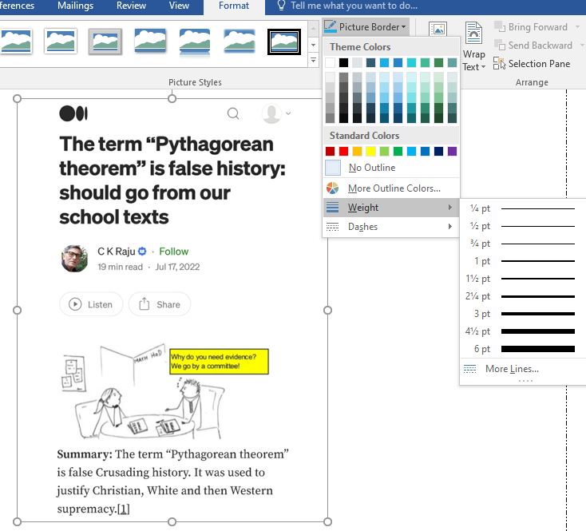

Pe fila Inserare (Insert) din grupul Simboluri(Symbols)
se alege
simbolul dorit: 
Pe fila Inserare (Insert) în grupul Simboluri(Symbols)
se poate alege o ecuaţie din listă 
sau se poate insera o ecuaţie(formula) nouă (Insert New Equation) care se editează folosind simbolurile cuprinse în fila Proiectare(Design) care apare:

Pentru pagini selectaţi Bordură pagină (Page Border) din caseta de dialog Borduri şi umbriri(Borders and Shading)

şi setaţi proprietăţile chenarului, Aplică la (Apply to) Întreg documentul(Whole Document).
Faceţi clic în locaţia unde doriţi să inseraţi imaginea. În fila Inserare (Insert) în grupul Ilustratii (Ilustrations) faceţi clic pe Imagine (Pictures) şi în fereastra care apare selectaţi o imgine şi apăsaţi butonul Inserare (Insert).
Imaginea se poate introduce într-un chenar(Picture Border):

I se poate aplica un efect(Picture Effects):
Se poate seta poziţia(Position) în raport cu textul, etc...:
Salman Rushdie
SmartArt se referă la gama de elemente grafice disponibile în Word care se poate folosi pentru a crea diagrame, cum ar fi diagrame de flux, diagrame de proces, organigrame și altele asemenea. Selectați o imagine SmartArt din galerie și apoi personalizați-o în funcție de nevoi. SmartArt vă ajută să creaţi diagrame cu aspect profesional în câteva minute.
Faceţi clic în locaţia unde doriţi să inseraţi elementul Smart Art. În fila Inserare (Insert) în grupul Ilustraţii (Ilustrations) faceţi clic pe Smart Art (Smart Art) :
şi în fereastra care apare selectaţi o categorie din panoul din stânga pentru a vizualiza o serie de aspecte pentru acea categorie în panoul central. Faceţi clic pe un aspect pentru a-l previzualiza în
panoul din dreapta.
După inserarea SmartArt, există câteva lucruri pe care aţi putea dori să le schimbați cu privire la aspectul său. Ori de câte ori selectaţi o imagine SmartArt, filele Design și Format vor apărea în partea dreaptă a Panglicii. De acolo, este ușor să editați stilul și aspectul unui grafic SmartArt.
Pentru detalii: Smart Art 1 sau Smart Art 2
Faceţi clic în locaţia în care doriţi să adăugaţi un ClipArt → Fila inserare (Insert) → grupul Ilustraţii (Ilustrations) → clic pe butonul Imagini Online (Online Pictures)
Introduceţi un cuvânt sau o expresie pentru a descrie ceea ce căutaţi, apoi apăsaţi pe Enter.
Filtraţi rezultatele după Tip(Type) pentru Clipart.
Selectaţi o imagine şi clic pe Insert
Watermark-ul este o poză sau un text ce apare În fundalul (background) fiecarei pagini dintr-un document.
În fila Proiectare (Design) grupul Fundal pagină(Page Background) daţi click pe pagină(Watermark) :
se poate alege un watermark din listă(Confidential)
sau se poate insera un watermark personalizat (Custom Watermark)
Introduceţi un cuvânt sau o expresie pentru a descrie ceea ce căutaţi, apoi apăsaţi pe Enter.
Selectaţi o imagine şi clic pe Insert
Se obţine :
Pentru detalii : Watermark
Pe fila Inserare (Insert) în grupul Antet & Subsol(Header & Footer) se poate alege Număr de pagină(Page Number): 
şi din listă se poate alege poziţia şi formatul dorit:
- Lansaţi procesorul de text Microsoft Word
- Pentru margini alegeţi formatarea predefinită Moderate din listă
- Scrieţi titlul ECUAŢIA DE GRADUL AL DOILEA cu font CASTELLAR, mărime 18, culoare roşie(red), subliniat cu linie punctată, centrat
- Scrieţi folmula de calcul a rădăcinilor ecuaţiei de gradul doi
- Sub ecuaţie scrieţi textul: PROGRAM DE VACANŢĂ cu font ALGERIAN, mărime 18, culoare albastră(blue), aliniat la dreapta.
- Sub acest text inseraţi o imagine de vacanţă şi adăugaţi acesteia o bordură de tip linie întreruptă de culoare verde de grosime 6 pt şi efect de tip Umbrire(Shadow).
- În următoarea pagină inseraţi imaginea şi textul următor cu caractere Courier New mărimea 12.
- Inseraţi o imagine Clip Art la alegere.
- În următoarea pagină realizaţi organigrama de mai jos:
. - Inseraţi o imagine de fundal(Watermark) la alegere.
- Inseraţi numere de pagină.